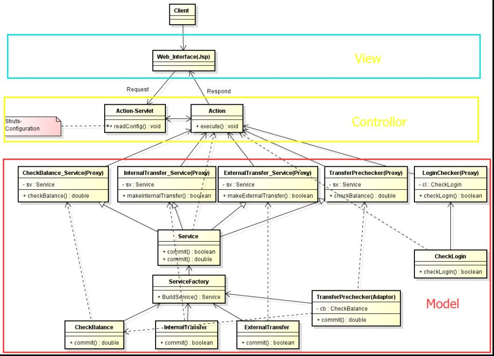

Why you did it?
This was the final project in Joel Henry's Adv Programming Theory course in 2014. The goal for this project is to practice the usage of programming design patterns. Four design patterns should be used in this project. The idea of this system is provided by Tom Battaglia. There are 4 design pattern used in this system: MVC, Adapter, Proxy and Factory.
What it does?
This is a simple banking system, it has a user management module in which the users can sign in and change their password, users can also do the internal money transfer and external money transfer to another account..
How you built it?
The whole project contains 4 design patterns, I use the MVC (Model, View, Controller) pattern to handle user's request. When user send a request to the server, the controller of MVC pattern will handle the request and send it to the right model.
For all the model objects in this system, they are all built base on Proxy design pattern. Each service is a proxy of a DAO (Data Access Object) which talks to the database.
I wrote a Java interface called Service, all the models implement the Service interface.
There is a class called Service Factory which will build services according to the request which is the usage of Factory design pattern. At last, there is a class called TransferPrechecker which has a composition relationship with the class CheckBalance, this is the useage of Adapter design pattern.
This is because, if the business logic changed, the check balance class may implement another interface,so we need an adapter design pattern here to make it consistent.
What did you learn?
In this assignment, I learned how to use UML diagram to do the object oriented system design. I also learned how to use programming design patterns and the reason why we want to use programming design patterns.